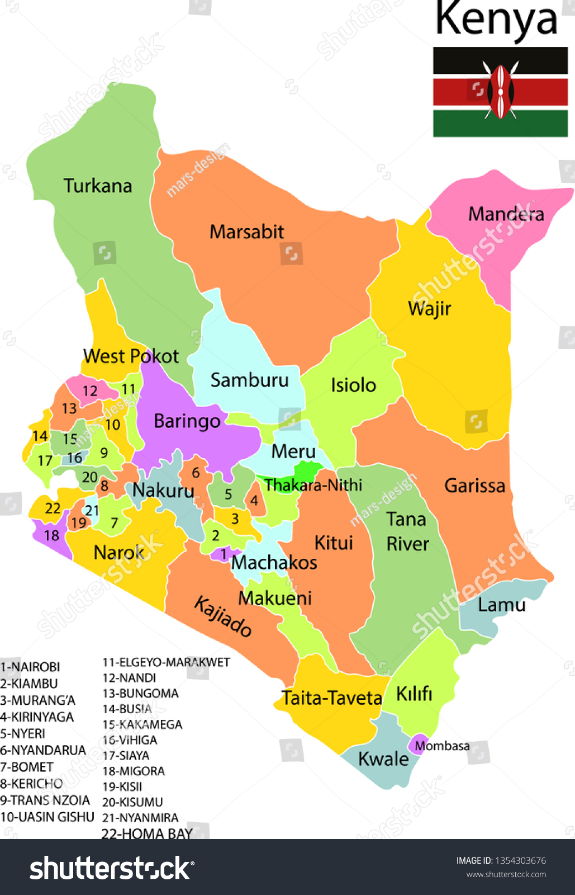

Even if you've never been to Kenya, chances are you know what it looks like. Kenya's savanna is familiar from movies, TV shows, books, and commercials. It's the landscape many people imagine when they think of Africa. Kenya is located in East Africa. Its terrain rises from a low coastal plain on the Indian Ocean to mountains and plateaus at its center. Most Kenyans live in the highlands, where Nairobi, the capital, sits at an altitude of 5,500 feet (1,700 meters). West of Nairobi the land descends to the Great Rift Valley, a 4,000-mile (6,400-kilometer) tear in the Earth's crust. Within this valley in the deserts of northern Kenya are the jade-green waters of famous Lake Turkana.